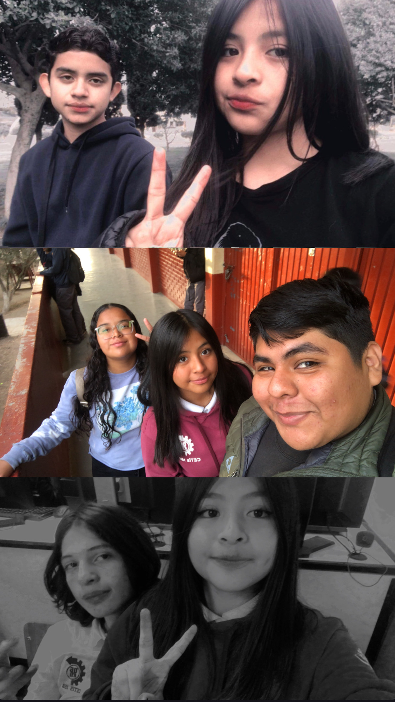
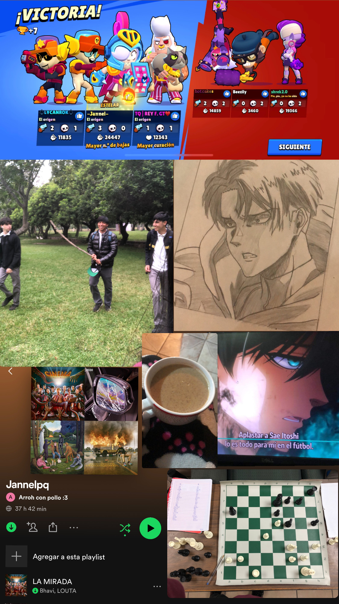
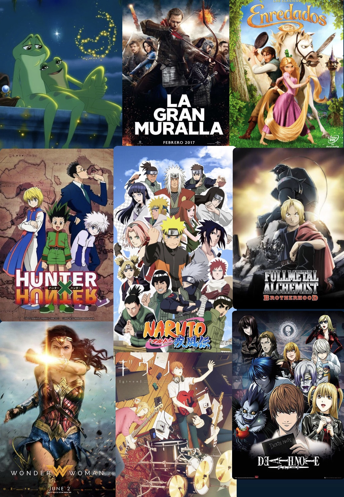

Top 10
Amigos, pasatiempos, música, películas
Lista de amigos

- Lennin
- Carolina
- Alexander
- Fabricio
- David
- Dulce
- Andrea
- Marcos
- valentín
- Sebastian
Lista de pasatiempos
- Escuchar música
- Ver anime
- Jugar ajedrez
- Dibujar
- Jugar videojuegos
- Salir con amigos
- Hacer llamadas con amigos
- Ver películas
- Cocinar
- Saltar la cuerda

Lista de canciones

- Okupa-Wos
- Alma dinamita-Wos
- Melón vino-Wos
- Sabor a mi-Los panchos
- Not Today-Twenty One Pilots
- Smithereens-Twenty One Pilots
- Spotlight-Lil peep
- Mi bello Ángel-Natanael Cano
- Enamorado tuyo-Cuarteto de Nos
- Ni parientes somos-Los tigres del norte
Lista de series o películas
- La princesa y el sapo
- Naruto
- La gran muralla China
- Hunter x Hunter
- La mujer maravilla
- Given
- Enredados
- Fullmetal Alchemist Brotherhood
- Encantada
- Death Note

Video motivacional